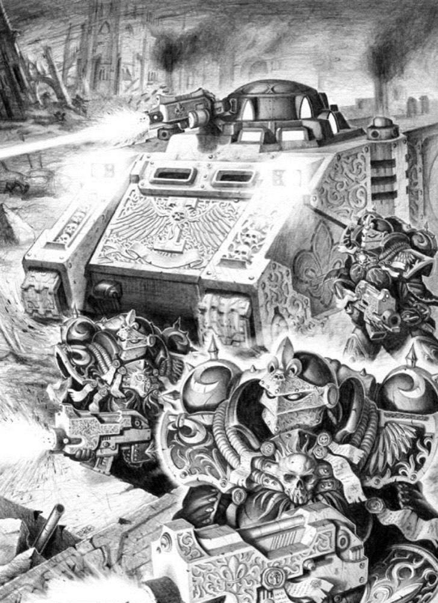

Adepta Sororitas
| Adepta Sororitas The Sisters of Battle | |
|---|---|
The seal of the Adepta Sororitas: a fleur-de-lis and skull set in the ring of the Ministorum | |
| Type | Armed sisterhood of the Ecclesiarchy |
| Formed | By the Decree Passive, in the 36th millennium, from the Daughters of the Emperor |
| Founder | Alicia Dominica, at the order of Ecclesiarch Sebastian Thor |
| Leader | The Abbess Sanctorum |
| Convents | Convent Prioris (Terra); Convent Sanctorum (Ophelia VII) |
| Chamber Militant of | The Ordo Hereticus of the Inquisition, by the Convocation of Nephilim |
| Size | Dozens of Orders Militant, each of up to a thousand Sisters per preceptory |
| Recruitment | Female orphans of the Schola Progenium |
| Patron saints | Alicia Dominica, Katherine, Mina, Arabella, Silvana, Lucia, Celestine |
| Orders Majoris | |
| Order of the Bloody Rose, Order of the Sacred Rose, Order of Our Martyred Lady, Order of the Valorous Heart, Order of the Ebon Chalice, Order of the Argent Shroud | |
The Adepta Sororitas, commonly the Sisters of Battle, are the armed sisterhood of the Adeptus Ministorum. They are warrior-women raised from infancy in the faith of the Imperial Cult, clad in ceramite power armour and armed with bolters, flamers and melta weapons, and they fight the wars of the Ecclesiarchy in every quarter of the Imperium of Mankind. They are organised in Orders Militant, each with its own saint, banner and tradition, and they act as the Chamber Militant of the Inquisition's Ordo Hereticus.[1]
The Sisters came into being as a result of a tyranny. The Ecclesiarchy's own armies, the Frateris Templar, were disbanded in the reformation that followed the Reign of Blood in the 36th millennium, and the Ministorum was forbidden to keep "men under arms". The Sisterhood, being women, was held not to fall within the ban. That evasion of the spirit of Sebastian Thor's decree is the foundation on which the Orders were built, and the Inquisition has watched them ever since.[1]
In their own account the Sisters are a sisterhood of the Emperor's saints. They believe that faith is a weapon as certain as any armament, and their battle liturgy consists of hymns, litanies and the invocation of the Emperor's name in the middle of combat. Their soldiers describe visions, miracles and an inner force that carries them through wounds that would drop a normal soldier. The Sisters call this divine grace. Inquisitors, who have watched it closely, call it something else in their private reports.[1]
History
[edit]The Emperor's Truth and its heirs
[edit]The Sisters have no counterpart in the Great Crusade. The Emperor held that the Imperium should be secular and rational, and he forbade the worship of himself as a god. The Imperial Truth that his soldiers carried to the conquered worlds condemned all religion as superstition, and in the early years of the Crusade the Remembrancers noted that the Truth was applied with a firm hand to cults of every kind. Yet even then there were men and women who regarded the Emperor as more than a man, and sects, the largest of them the Lectitio Divinitatus, formed about the figure of the Emperor on a number of worlds. The Emperor ordered them put down.[2]
The Heresy changed this. The Word Bearers had been among the first to worship the Emperor, and their primarch Lorgar was rebuked by the Emperor for it. After the Emperor was interred in the Golden Throne and the Imperium had been reformed, belief in his divinity spread with great speed and was formalised in the Imperial Cult. A great organisation of priests grew up to serve it. The military arm of the Ecclesiarchy, of which the Sisters of Battle are the last survivor, comes from the same period.[1]
One tradition holds that the Sisters are descended from the women who stood beside the Emperor in the Great Crusade, among them the pariah warriors known as the Sisters of Silence who served him as hunters of witches. The Sisters do not themselves claim it, and the Inquisition holds that no connection exists, since the Silent were made by the Emperor and served no faith. Imperial accounts differ on the point.[3]
The Age of Apostasy
[edit]In the 36th millennium the Ecclesiarchy held nearly total power. Its tithes took precedence over the Administratum's, and its choice of governors and wars determined the policy of the High Lords. The Adeptus Astartes and the Adeptus Mechanicus withdrew from a government they could not trust. Warp storms isolated whole sectors, and cults of penitents, flagellants and doomsayers rose across the Imperium. The enemies of Mankind exploited the confusion, and the Traitor Legions, Orks and Drukhari struck at worlds that no help could reach.[1]
Goge Vandire, the Master of the Administratum, took advantage of the disorder in late M35. He had installed a pliable Ecclesiarch, Paulis III, and when Paulis proved incompetent he had him murdered and took the office for himself. His rule, the Reign of Blood, was a tyranny in which billions died, and it was enforced by the Frateris Templar and by regiments of the Astra Militarum loyal to him.[1]
The Brides of the Emperor
[edit]Early in his rule Vandire heard of a convent of warrior-women on the agri-world of San Leor, the Daughters of the Emperor. He went there with thousands of retainers and demanded their loyalty. The Daughters refused to open their gates to any but the Emperor. Vandire entered with a small guard and had his bodyguard fire a laspistol at him. The shot was turned by the field of his Rosarius, which the Sisters had never seen, and they took the survival of the High Lord for a miracle. They swore themselves to him, and Vandire named them the Brides of the Emperor and made them his personal guard and his executioners.[1]
Alicia Dominica and the fall of Vandire
[edit]
A reform movement, the Confederation of Light, rose against Vandire under the preacher Sebastian Thor. As Thor's crusade gained ground the Astartes and the Mechanicus, who had stood aside, joined it and closed on Terra. In 378.M36, according to the Ecclesiarchy's account, a strike force drawn from the Imperial Fists, the Black Templars and other Chapters attacked the Ecclesiarchal Palace and found their drop-pod assault checked by a corps of warrior-women in power armour who fought to the last. The siege was long and without quarter.[1]
It ended through the intervention of Centurion Longinus of the Adeptus Custodes, who sought out the Brides' leader, Alicia Dominica, and her five closest companions, Silvana, Mina, Lucia, Katherine and Arabella. He brought them to the Golden Throne. What they learned there has never been written down, but when they came out they went directly to Vandire. Dominica struck off his head, and it is said that his Rosarius, which had saved him at San Leor, was cloven by her blade. The Reign of Blood was over.[1]
The Thorian Reformation
[edit]Thor was made the 292nd Ecclesiarch and set about rebuilding. The Frateris Templar were disbanded and the Decree Passive forbade the Ministorum from maintaining a standing army of "men under arms". The Brides resumed their old name as Daughters of the Emperor and were divided between two new convents, the Convent Prioris on Terra and the Convent Sanctorum on Ophelia VII. They were reconstituted as the Orders Militant of the Adepta Sororitas, with Dominica as their founder. The Sisters swelled to over ten thousand, and Thor established the system of orders that remains in place.[1]
Soon afterwards the Ordo Hereticus of the Inquisition, founded in the same crisis to stop another Age of Apostasy, signed with the senior Sisters the Convocation of Nephilim, binding the Sisterhood to the Ordo as its Chamber Militant. The terms were never published. Some believe the Convocation reflects what Dominica was told before the Throne, and some that it was a means for the Inquisition to hold the Ecclesiarchy's new weapon in check.[1]
Wars of Faith
[edit]Alicia Dominica fell in battle at Frideswide's World in the middle of the 36th millennium, wounded by a single lasgun bolt after surviving hundreds of blows, and was declared a saint. The Ecclesiarchy established the office of Abbess Sanctorum to lead the Sisterhood in her place. In the early 38th millennium the power of the Ministorum reached a new height and a thousand Wars of Faith were launched against heretics, in the course of which two more Orders were founded, the Bloody Rose and the Sacred Rose.[1]
The Orders Militant have fought alongside the Astartes, the Guard and the Inquisition ever since. In 799.M41 an invasion of San Leor by the Red Corsairs was annihilated by the counter-attack of nine Orders, and in 833.M41 the Order of the Bloody Rose fought beside the Black Templars in the Vinculus Crusade. The Order of Our Martyred Lady was almost destroyed at Armageddon in 998.M41, and its Sisters have sworn to retake the hive city of Tempestora.[1]
The Era Indomitus
[edit]At Cadia, and in the wars that followed the opening of the Great Rift, the Sisterhood fought in numbers not seen since the Reformation, and many of its Orders have been lost. The faith of the Sisters has been strengthened by the return of Saint Celestine, the Living Saint, who has appeared on many battlefields to lead the Orders and then vanished. The Abbess Sanctorum, Morvenn Vahl, commands the Sisterhood in the Indomitus Crusade, and the Sisters have been among the forces that Guilliman has relied on in his campaigns.[4]
Organisation
[edit]Convents and Orders
[edit]
The Adepta Sororitas is divided between the two convents. Each is led by a prioress, and the Abbess Sanctorum, who is elected from among the leaders of the Orders, commands the whole Sisterhood and may sit among the High Lords of Terra. Each Order is headed by a Canoness Superior, who answers to the Abbess alone. A preceptory is a single convent of up to a thousand Sisters and is about the size of a Space Marine Chapter. An Order may have a number of preceptories on different worlds.[1]
| Order | Convent | Patron | Notes |
|---|---|---|---|
| Order of the Bloody Rose | Sanctorum | Saint Mina | Fierce and aggressive; fights beside the Black Templars. |
| Order of Our Martyred Lady | Sanctorum | Saint Katherine | Descended from Katherine's Order of the Fiery Heart. |
| Order of the Valorous Heart | Sanctorum | Saint Silvana | Known for its mastery of armoured assault. |
| Order of the Sacred Rose | Prioris | Saint Arabella | The last of the six companions to stand before the Throne. |
| Order of the Ebon Chalice | Prioris | Saint Lucia | Warriors of the Convent Prioris, often seen in the fiercest sieges. |
| Order of the Argent Shroud | Prioris | Alicia Dominica | The Order that holds the memory of the founder. |
The Orders Majoris are joined by many Orders Minoris, which are smaller and recent, and by the non-militant orders of the Ministorum. The Orders Hospitaller tend the wounded, the Orders Dialogous serve as clerks, preachers and orators, and the Orders Famulous attend the saints and their relics.[1]
Recruitment and training
[edit]Sisters are recruited from the female orphans of the Schola Progenium, the children of men and women who died in the Emperor's service. They enter the Convents as novices and are taught the Imperial Creed in a strict form, a regime of drill, prayer and penance by which they come to regard the Emperor as their father. At the end of her novitiate a Sister swears her vows and is given armour and a bolter. She is expected to serve until she dies.[1]
Ranks and specialisations
[edit]The common warrior is the Battle Sister. Above her are the Sister Superior, the Canoness and the Canoness Superior, and above them the Prioress and the Abbess. Within each squad are specialist Sisters. Celestians are elite troops in heavier armour, Dominions carry special weapons, Retributors use heavy weapons, Seraphim and Zephyrim use jump packs, and the Sisters Repentia are penitents who have disgraced themselves and are sent to die in the thick of the enemy with chainswords.[5]
Faith and wargear
[edit]
A Sister's armour is of the same ceramite as that of the Space Marines, and is richly ornamented with the symbols of her Order. She is armed with a bolter, a weapon granted by special dispensation, and with flamers and meltaguns for the heavier work. The Orders fight from armoured transports and tanks. The Immolator carries squads into battle with flame weapons, the Exorcist tank fires a great organ of rockets, and the Penitent Engine is a war machine made from a bound penitent. The largest Orders also use the Paragon Warsuit, a heavy battle-frame that carries a Canoness into combat.[5]
The Sisters make heavy use of a doctrine of faith. A battle hymn is sung before the attack, and relics of saints are carried into battle. A Sister who dies in combat is held to have achieved martyrdom, and her death is believed to strengthen those left behind. An Order that has been reduced to a few survivors will continue to fight, because to leave the field would insult the dead. The Orders also have a tradition of the Acts of Faith, moments of heightened devotion in which the Sisters perform feats that are believed to be miraculous.[1]
Relations with other institutions
[edit]- Inquisition
- The Ordo Hereticus has the Sisters under its authority by the Convocation of Nephilim, and Inquisitors of the Ordo use the Orders in their investigations. The Ecclesiarchy tolerates this and does not like it.
- Adeptus Astartes
- The Sisters and the Chapters have fought side by side since the Siege of the Ecclesiarchal Palace, which each side remembers differently. The Black Templars, who have a great respect for the faith of the Sisters, fight beside them most readily.
- Astra Militarum
- Regiments of the Guard are often placed beside the Sisters in the Wars of Faith, and the Sisters set them an example of piety that the regiments do not always welcome.
- Adeptus Arbites
- The Arbitrators and the Sisters are drawn from the same Scholae and respect one another's severity, though the Arbites say that the law is older than faith.
Notable Sisters
[edit]- Alicia Dominica, founder of the Orders Militant and the Sisterhood's first saint.
- Katherine, shield-bearer of Alicia Dominica, patron of the Order of Our Martyred Lady.
- Saint Celestine, a Sister Repentia who became the Living Saint and has risen from death several times in the sight of the Orders.
- Morvenn Vahl, Abbess Sanctorum in the Era Indomitus, who fights in a Paragon Warsuit.
Timeline
[edit]| Date | Event |
|---|---|
| late M35[a] | Goge Vandire, Master of the Administratum, installs the Ecclesiarch Paulis III and begins the Reign of Blood. |
| 378.M36 | The Brides of the Emperor end the Reign of Blood. Alicia Dominica kills Vandire after the siege of the Ecclesiarchal Palace. |
| c. 379.M36[b] | Sebastian Thor becomes the 292nd Ecclesiarch. The Frateris Templar are disbanded and the Sisters are reconstituted as the Orders Militant. |
| c. 380.M36[c] | The Ordo Hereticus of the Inquisition signs the Convocation of Nephilim with the senior Sisters. |
| c. 650.M36[d] | Alicia Dominica falls at the Battle of Frideswide's World and is declared a saint. |
| early M38[e] | A thousand Wars of Faith are launched against heretics. |
| mid M38[f] | The Order of the Bloody Rose and the Order of the Sacred Rose are founded under Ecclesiarch Deacis VI. |
| 799.M41 | A Red Corsairs strike force invades San Leor. Nine Orders destroy it. |
| 833.M41 | The Order of the Bloody Rose fights beside the Black Templars in the Vinculus Crusade. |
| 835.M41 | The Shrine world of Piety returns to realspace after two centuries in a Warp storm. |
| 998.M41 | The Order of Our Martyred Lady is almost destroyed at Armageddon. |
| 999.M41 | At the Fall of Cadia and the opening of the Great Rift, the Sisterhood loses many of its Orders. |
| c. 012.M42[g] | Morvenn Vahl becomes Abbess Sanctorum and commands the Sisterhood in the Indomitus Crusade. |
See also
[edit]Notes
[edit]- ^ Estimated; no record gives an exact year.
- ^ Estimated; no record gives an exact year.
- ^ Estimated; no record gives an exact year.
- ^ Estimated; no record gives an exact year.
- ^ Estimated; no record gives an exact year.
- ^ Estimated; no record gives an exact year.
- ^ Estimated; no record gives an exact year.
References
[edit]- ^ a b c d e f g h i j k l m n o p q Liber Ecclesiasticus (M37). Adeptus Ministorum.
- ^ Oliton, Mersadie (c. 005.M31). Chronicles of the Luna Wolves. Remembrancer Order.
- ^ Chronicles of the Heresy (sealed). Logos Historica Verita, Terra.
- ^ Records of the Indomitus Crusade (ongoing). Office of the Lord Commander.
- ^ a b Codex Imperialis (rev. 980.M41). Adeptus Terra.